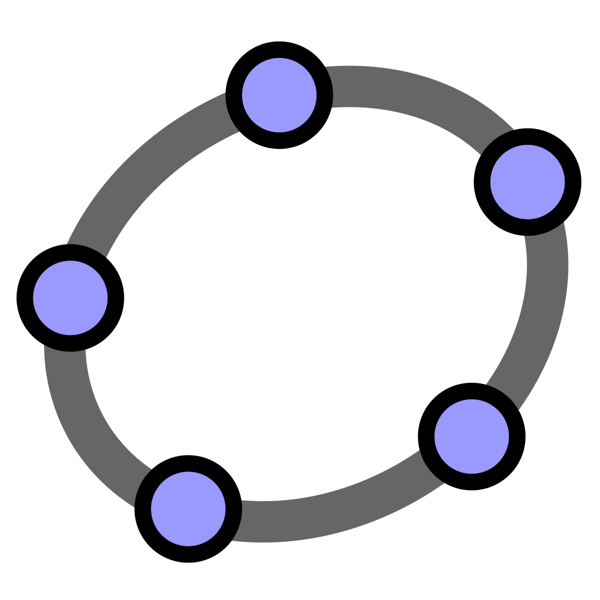

~Matemáticas~
Para muchos estudiantes, las palabras “álgebra”, “trigonometría” y “geometría” bastan para evocar las peores pesadillas.
No obstante, existen muchas dificultades y prejuicios respecto a las matemáticas que pueden resolverse con un poco de práctica en casa, sobre todo cuando se dispone de herramientas didácticas como las que ofrece el mundo digital. Si deseas mejorar tus resultados en esta materia, sigue leeyendo!!!!!
AQUÍ te enseñare un par de tips, apps que te salvaran muchas veces la vida
MATHWAY
Es una herramienta web 2.0, gratuita y online, es un editor matemático que ayuda a entender y resolver problemas matemáticos, sea de trigonometría, álgebra, geometría, estadística, cálculo y graficación de funciones, entre otros puntos.
Cuenta con varios millones de usuarios y de numerosos problemas y ejercicios resueltos.
En los últimos años, es posible acceder también a esta herramienta desde las principales tiendas de aplicaciones para iOS, Windows, Android y otros.
GEOGEBRA

GeoGebra es un software de matemáticas para todo nivel educativo. Reúne dinámicamente geometría, álgebra, estadística y cálculo en registros gráficos, de análisis y de organización en hojas de cálculo. GeoGebra, con su libre agilidad de uso, congrega a una comunidad vital y en crecimiento. En todo el mundo, millones de entusiastas lo adoptan y comparten diseños y aplicaciones de GeoGebra.
Microsoft Math Solver
Una app gratuita para resolver sistemas de ecuaciones.
Puede resolver sistemas de ecuaciones matemáticas largos y complicados.
Lo mejor de todo es que no hace falta ni que escribas el problema en la app ya que es capaz de escanear ecuaciones escritas a mano y obtener el resultado para ti. También puedes dibujarlo sobre la pantalla si lo prefieres.
PHOTOMATH
Es una aplicación móvil descrita como una calculadora por cámara, que utiliza la cámara del teléfono móvil para reconocer patrones matemáticos y mostrar la solución directamente en la pantalla. Es gratuita y está disponible para Google Android e iOS.
Symbolab
Symbolab es un motor de respuesta desarrollado por EqsQuest Ltd. Es un servicio en línea que calcula soluciones paso a paso a problemas matemáticos en una variedad de temas.
Desmos
Es una calculadora gráfica implementada como una aplicación de navegador y una aplicación móvil. Además de permitir representar gráficamente tanto ecuaciones e inecuaciones, también dispone de listas, parcelas, regresiones, variables interactivas, restricciones de grafos, gráficos simultáneos, piecewise función graphing, función polar graphing, dos tipos de rejillas de gráficos — entre otras características computacionales generalmente encontradas en una calculadora programable. También puede ser utilizado en varias lenguas diferentes.
Cymath
Es una aplicación que nos permitirá resolver problemas matemáticos de forma automática. No importa que no sepas resolver ecuaciones de segundo grado o no tengas ni idea de lo que es un seno o un coseno, esta app se encargará de todo y te ofrecerá directamente la solución.
Hay dos formas de utilizar Cymath. La primera es muy simple: tan sólo tendremos que escribir el problema que queremos resolver directamente en la aplicación. Y la segunda es aún más simple, ya que nos bastará con hacer una fotografía del problema que queremos resolver. Es importante, eso sí, que el problema esté escrito con una letra legible y que tengamos suficiente luz para hacer la foto.